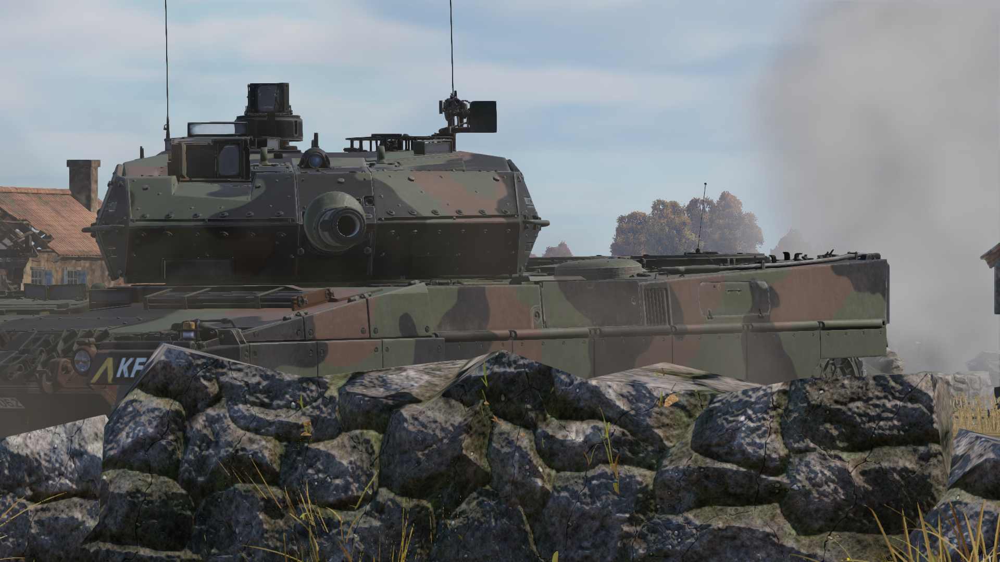

Hello Sir!!!
My name is Paluch Luangwattanachok(พลัช เหลืองวัฒนาโชค)
and nickname is Jian , also you can call me Kan too.
My section is G4 My section is DIT.
Build Following Paragraph
Why i want to studied Full Stack Development?
- I want to studied new languages...a lot
What am i expect from this subject?
- Learn new languages for support passion of coding(Quiet boring now...)
What are your weaknesses that you need to develop regarding programming skills and development methods?
- still lost passion of Coding for while now , for now just Coding because "it's work" not "for fun" anymore
My interest space
My Youtube channel : this is my channel

(My game Screenshot)